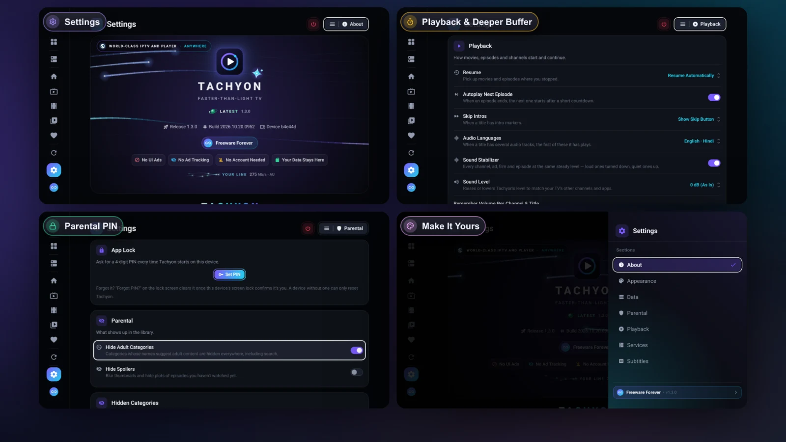

A Quick Tour of Tachyon's Settings
What every Settings page in Tachyon does — Services, Playback, Subtitles, Appearance, Parental and Data — and the settings worth changing.

Tachyon works well out of the box, so you never have to open Settings. When you do, every page explains its rows in a line under each name. This tour shows what lives where and which settings are worth a look.
Getting Around Settings
- TV Settings is near the bottom of the left rail. Hold OK anywhere in Settings (or press Menu) for the list of sections; Back from deep in a page brings you to its top first. Easy Settings at the top of every section opens the QR code to change it all from your phone — see Easy Settings.
- Phone Settings is the last tab of the bottom bar, and in the side menu.
- Desktop Settings is near the bottom of the left rail, or press Ctrl ,.
The sections are Services, Playback, Subtitles, Appearance, Parental and Data, plus About. On a computer, Parental and Data are called Content & Parental and Data & Storage, and there are two more: Shortcuts (every key) and Documentation (the full manual).
Services
- Your services, each with its account live: status, expiry date and connections in use. Add, edit, refresh, remove and reorder them here. See How to Add Your Service.
- Startup → Ask Which Service to Watch at Startup: show Landing at every start, or go straight back to your last choice.
- The bar at the top switches between Set Up On This Device and Sync From Main Device — one set of services for every device. See Service Sync.
Playback
How movies, episodes and channels start, sound and continue.
| Setting | What It Does |
|---|---|
| Resume | Pick up movies and episodes where you stopped, or always start from the beginning (on a computer: Resume Movies & Episodes Where You Left Off). |
| Autoplay Next Episode | The next episode starts after a short countdown you can cancel. |
| Skip Intros | Show a Skip button, skip by itself, or off — when the server marks intros (Emby). |
| Audio Languages | Android Up to three languages, in order, for titles with several audio tracks. |
| Sound Stabilizer | Every channel, film and ad at one steady level. On by default. |
| Sound Level | Raise or lower Tachyon's level by up to 12 dB. |
| Allow Volume Above 100 % | Lets the player's volume go to 250 % for quiet streams. Off by default. |
| Remember Volume Per Channel & Title | Each channel, movie and series starts at the volume you last used for it. |
| Fall Back to Other Versions of a Channel | When a channel keeps failing, try its HD / FHD / SD copies. |
| Deeper Buffer for Movies & Series | One longer refill instead of many short pauses on a slow provider. |
| Movie Index Cache | Keeps each title's index on the device, so it starts faster next time. |
| Show Stream Details | The stream tags and the Stream Info line in the player. |
More on sound in Sound Stabilizer and Volume Up to 250 % and on languages in Audio Languages and Tracks.
Only on Some Devices
- TV Match Frame Rate switches the TV to the video's frame rate (24, 25, 50 or 60) for judder-free motion.
- Android Tachyon's Own Volume (on by default) keeps the player's volume separate from the device's.
- Phone Auto Pop-Out keeps a video playing in a small window when you leave the app.
- Android The Video Player card: Buffer, Decoder, Aspect Ratio, Surround Passthrough, Smooth Motion (Double Rate) and, on TVs that support it, Multimedia Tunneling.
- Desktop Stream Reliability (Auto-Reconnect & Self-Healing, Stall Detection, Buffering Profile, Live Buffer), Quality (Maximum Resolution), Preview Channels When Selected, Open the Last Channel at Start and the External Player (mpv, VLC or your own).
- Network → Default User-Agent for providers that only accept certain players, and Cast Only on Wi-Fi where casting is available.
Subtitles
The online subtitle services: OpenSubtitles.com, SubDL and Podnapisi.NET. Saved Subtitles clears the downloads kept on the device. See Subtitles in Tachyon.
Appearance
- Accent: the colour of buttons, highlights and focus.
- Layout: Poster Size, Group Versions of a Title, Show Channel Numbers, Show Row Dots and Reduce Motion. Android Lite Mode gives slower TV boxes a lighter look; Auto turns it on where it helps.
- Subtitles: how subtitles look — font, size, colour, edge, background, bold and distance from the bottom — with a live preview.
- Weather on Landing: the city, the weather and the temperature beside the clock. Off stops every lookup.
- Home Rows: which rows Home shows, and in what order. See Make Home Yours.
- Desktop Big-Screen Mode: the larger 10-foot layout for a computer connected to a TV.
Parental
App Lock (a 4-digit PIN at start), Hide Adult Categories (on by default), Hide Spoilers, and the categories you've hidden (Desktop or pinned). See App Lock and the Parental PIN.
Data
- Refreshing (on a computer: Library Refresh): libraries update by themselves every 7 days, and the TV Guide on the schedule you pick. Refresh Libraries (on a computer: Refresh Libraries Now) updates them at once.
- Cast & Crew: photos and biographies for the people on a title's page, looked up online (off: only the names your service lists).
- Backup & Transfer: one encrypted file with your whole setup. See Back Up and Move Your Settings.
- Watch History: clear Continue Watching, watched marks and recently watched channels.
About
The version and build, How To guides with step-by-step help, the privacy summary and the open-source credits. On a TV, About also holds the Easy Settings QR code.